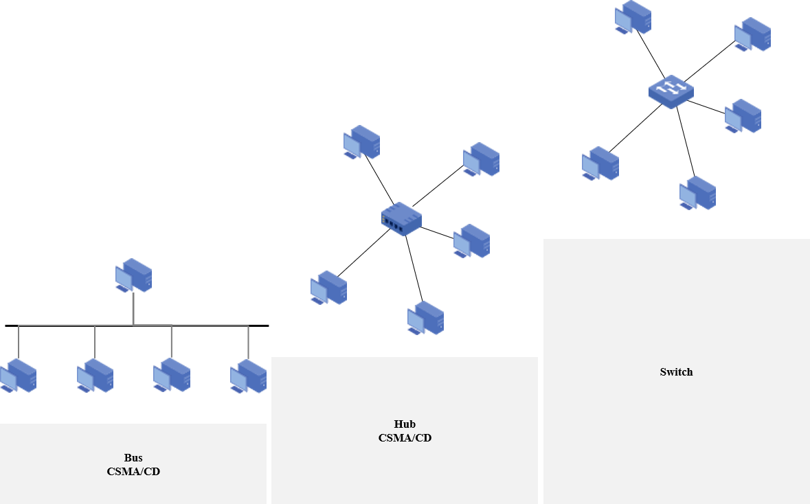
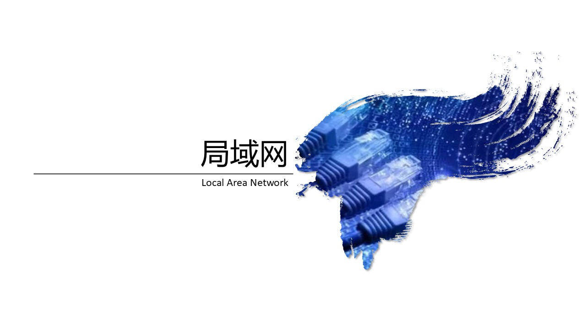
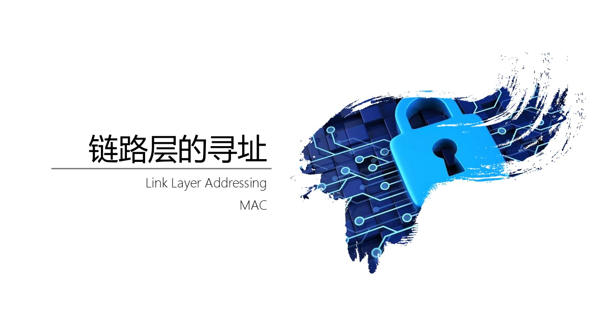
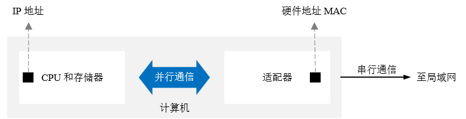

广播信道
@Broadcast- 内容 Contents
- 以太网 Ethernet
- 局域网 LAN
- 链路层寻址 MAC
- 广播信道 Broadcast


- 以太网20世纪70年代末发展起来
- 标准 Standard
- DIX Ethernet标准
- IEEE 802.3 标准
- 常见分类 Classification
- 10BASE - T以太网 - 传统以太网
- 100BASE - T以太网 - 快速以太网
- 吉比特以太网 - 主流以太网
- 10吉比特以太网
- 特点 Feature
- 可扩展
- 灵活性大
- 易于安装
- 稳健性高
由施乐Xerox公司创建，并联合Inter，DEC共同发布基带总线局域网标准
以历史上发现电磁波的 以太 Ether 命名
1982年发布的第2个版本DIX Ethernet
V2是世界上第一个互联网产品的规约。数据传输率达到10Mbps
802委员会1983年发布的第一个以太网标准
数据速率达到10Mbps
通常说的以太网指的是符合DIX Ethernet V2标准的局域网

- Local Area Network
- 地理范围和站点数目有限
- 通常覆盖一个相对较小的地理区域，如一个办公室、一栋建筑或一个家庭
- 较高的数据率、较低的时延和较小的误码率
- 允许连接的设备共享资源，如文件、打印机和互联网连接
- 由于使用的设备和技术相对简单且成熟，局域网的建设和维护成本较低
- 网络设备和线路通常由单一组织管理，故障排除和维护相对简单，可靠性较高
- 广播信道的典型应用
- 以太网已经成了局域网的同义词
- 拓扑结构 Topology
- 总线型 Bus：传统以太网 Ethernet；后演变为星型
- 环型 Ring
- 星型 Star
- 特点 Features
- 广播 broadcast
多播功能
组播功能
- 共享 sharing
资源共享
信道/介质共享
- 适应 flexibility
便于系统扩展和演变，可灵活调整和改变
- 三高
可靠性高 reliability
可用性高 availability
生存性高 survivability



- 网络适配器 Adapter
- 俗称网卡 NIC，Network Interface Card
- 早期：独立
- 现在：集成化
- 拥有一个全球唯一的硬件地址 MAC地址
- 工作在OSI模型的物理层和数据链路层
- 功能：
串并转换：适配器和局域网之间是串行通信，而适配器和计算机之间是并行通信
数据缓存：网络的速率和计算机的速率不匹配，须要缓存；适配器有自己的存储器和缓存器，工作时不占用计算机的CPU
过滤：是发给自己的就接收；否则丢弃(安全)
- MAC - Medium Access Control
- 又叫物理地址、硬件地址，固化在适配器的 ROM 中
- IEEE802.3 规定 MAC地址为长度6 Bytes，共48 bits
- 高24位(前3 Bytes)是公司标识符 OUI - Organization Unique Identifier
由注册管理机构 RA - Registration Authority 分配
- 低24位(后3 Bytes)是扩展标识符 EUI - Extended Unique Identifier
由公司指定
- 48位 = 24位OUI + 24位EUI
- 分类 Type
- 单播帧 unicast：
一对一
目的MAC地址是一个单播地址。单播地址的第一个字节的最低有效位I/G（Individual/Group）为0
00:1A:2B:3C:4D:5E
- 广播帧 broadcast：
一对全体
固定为 FF:FF:FF:FF:FF:FF。第一个字节的最低有效位I/G为1，并且所有48位都为1
- 多播帧 multicast：
一对多
第一个字节的最低有效位I/G为1，但不是全1
01:00:5E:00:00:01
- 判断是单播还是多播/广播，最核心的依据是目的MAC地址第一个字节的最低位（I/G位）：
I/G位 = 0: 单播地址 (Individual/Unicast)
I/G位 = 1: 组地址 (Group Address)，包括多播和广播
- 在组地址中，再通过地址值区分多播和广播：
FF:FF:FF:FF:FF:FF 是广播
其他I/G位为1的地址是多播


| item | desc |
|---|---|
| 物理层 | 信号转换 - 发送数据时（并行 -> 串行）；接收数据时（串行 -> 并行）
物理连接 - RJ-45 水晶头 如何在物理媒介上传输原始比特流 |
| 数据链路层 | 成帧 Framing
错误检测 CRC 寻址 - 基于MAC地址通信 如何将比特流组织成帧，并通过MAC地址在直接相连的设备间可靠地传输这些帧 |
物理层关注的是如何在物理媒介上传输原始比特流
数据链路层关注的是如何将比特流组织成帧，并通过MAC地址在直接相连的设备间可靠地传输这些帧
LSB - Least Significant Bit；最低有效位
MSB - Most Significant Bit；最高有效位
网卡出厂时烧录的MAC地址，其第一个字节的LSB总是0，因此它是一个单播地址。这是物理固定的
多播/广播是逻辑概念
- 共享信道 Sharing
- 计算机通过一根总线链接在一起 - 共享信道
- 每个主机发送数据时，会引起线电压发送变化，每个主机都可以检测到这个数据 - 广播
- 除了广播，还希望实现点对点通信
- 为每一个适配器分配唯一的地址标识 - MAC地址
- 判断数据帧的目标 MAC 地址与适配器的MAC地址是否匹配
匹配，就接收
否则丢弃
- 在广播信道上实现点对点通信
- 某个用户通信时，随机接入信道，不需要事先建立链接
- 但是同时只能有一个主机发送数，否则就会产生冲突